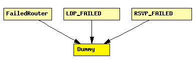

File: Network/Extras/Dummy.ned
C++ definition: click here
Implementation of a failed router. Does nothing and simply discards any incoming messages.
The following diagram shows usage relationships between modules, networks and channels. Unresolved module (and channel) types are missing from the diagram. Click here to see the full picture.
If a module type shows up more than once, that means it has been defined in more than one NED file.
| FailedRouter | A failed IP router. Simply discards all packets it receives, and that's all. |
| LDP_FAILED | Failed router. Discards all incoming traffic and generates nothing. Its interface (gates, parameters) is fully compatible with the RSVP_LSR router and node failures may thus be simulated by replacing the RSVP_LSR with FAILED_LSR. |
| RSVP_FAILED | Failed router. Discards all incoming traffic and generates nothing. Its interface (gates, parameters) is fully compatible with the RSVP_LSR router and node failures may thus be simulated by replacing the RSVP_LSR with FAILED_LSR. |
| Name | Direction | Description |
|---|---|---|
| in [ ] | input | |
| out [ ] | output | |
| ethIn [ ] | input | |
| ethOut [ ] | output |
simple Dummy gates: in: in[]; out: out[]; in: ethIn[]; out: ethOut[]; endsimple